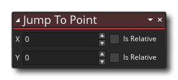
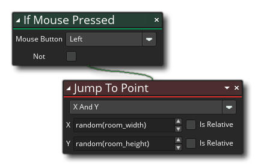

Descripción
Esta acción se usa para mover una instancia de una ubicación a otra. La instancia no se moverá suavemente a la nueva posición, sino que "saltará" para colocarse allí, de modo que si los valores son lo suficientemente grandes, se "saltará" cualquier otra instancia en el camino. Puede establecer valores absolutos para mover la instancia, o puede marcar la bandera "relativa" para que la instancia se mueva con respecto a la posición actual. Por ejemplo, si desea que la instancia salte 10 píxeles solo hacia la izquierda, debe establecer el valor x en -10 y el valor y en 0 y marcar relativo para ambos. Puede usar valores negativos para coordenadas absolutas y la instancia se moverá fuera del área de la sala base.
Sintaxis de acción:
Argumentos:
Argumento Descripción x La posición x para saltar a y La posición y para saltar a
Ejemplo:
El código de bloque de acción anterior comprueba si queda un mousehaga clic en la instancia y si se detecta una, la mueve a una posición aleatoria dentro de la sala.